大语言模型中的自动思维链（CoT）提示
Manual-CoT 通过人工逐条编写“问题+推理链”示范取得强于 Zero-Shot-CoT 的效果，但手工设计费时且需按任务定制。Auto-CoT 提出全自动构建示范：先用 Sentence-BERT 编码并对数据集问题做 k-means 聚类，再从每个簇中按距簇心距离选代表问题，用 Zero-Shot-CoT（'Let's think step by step'）生成推理链，并以简单启发式（问题不超过 60 tokens、推理不超过 5 步、答案须出现在 rationale 中）筛选。关键发现是多样性决定成败：Zero-Shot-CoT 的错误集中在 frequent-error cluster，基于相似度检索示范会触发 misleading by similarity，而按簇多样性采样可缓解。在 10 个推理基准上用 GPT-3，Auto-CoT 持续持平或超过 Manual-CoT，且示范中含 50% 错误时性能仍不显著下降；流式场景下 Auto-CoT* 从第 2 批起即接近 Manual-CoT。
few-shot CoT（Manual-CoT）性能优于 Zero-Shot-CoT，但其优势依赖逐条手工编写任务特定的示范（问题+推理链），人工成本高且换任务需重新设计；论文研究在仅有测试问题集、无训练数据与标注的假设下，能否自动构建示范并达到 Manual-CoT 的性能。
Auto-CoT 分两阶段：(i) 问题聚类——用 Sentence-BERT 编码问题并平均成定长向量，k-means 聚成 k 簇，簇内按到簇心距离升序排序；(ii) 示范采样——逐簇从距簇心最近的问题开始，用 Zero-Shot-CoT（'Let's think step by step'）生成 rationale 与答案，按启发式筛选（问题不超过 60 tokens、rationale 不超过 5 步；算术任务还要求答案非空且出现在 rationale 中），构成“问题+rationale+答案”示范；将 k 条示范与测试问题拼接做 in-context learning。核心设计依据是多样性分析：错误集中在 frequent-error cluster，多样性采样可缓解 misleading by similarity。另提出自举版本 Auto-CoT* 应对流式小批量场景。
使用 GPT-3（text-davinci-002）在 10 个基准推理任务上，Auto-CoT 持续持平或超过 Manual-CoT（Table 3）；换用 Codex（code-davinci-002）后整体性能仍具竞争力（Table 4）
MultiArith 上 Zero-Shot-CoT 错误率为 21.3%（600 题中 128 题答错）；Retrieval-Q-CoT 的 unresolving rate 为 46.9%，远高于 Random-Q-CoT 的 25.8%
k-means 聚类后存在 frequent-error cluster（Cluster 2），其 Zero-Shot-CoT 错误率达 52.3%
在有标注推理链训练集的设置下，Retrieval-Q-CoT 甚至超过 Manual-CoT（GSM8K 与 AQuA）
打乱示范成分的消融：打乱问题 91.7%→73.8%，打乱 rationale 91.7%→43.8%，打乱答案 91.7%→17.0%，说明 rationale-answer 一致性关键
Auto-CoT 在示范中含 50% 错误示范时性能仍无显著下降，明显优于 In-Cluster Sampling 基线
简单启发式使示范构建的错误率在多数任务（7/10）中保持在 20% 以下
流式设置（每批 m=30，MultiArith）下，第 1 批 Auto-CoT* 与 Zero-Shot-CoT 准确率相同，从第 2 批起与 Manual-CoT 相当
人工编写示范的标注者差异在符号推理任务上带来最高 28.2% 的准确率差距，而改变示范顺序在多数任务中变化小于 2%
与依赖人工示范的 Manual-CoT、需要标注答案来筛选生成 rationale 的方法（Zelikman et al.）、以及仍以人工示范为种子的 self-consistency/集成路线不同，Auto-CoT 在“仅有测试问题、无训练集”的更难假设下全自动构建示范且性能持平或更优；并通过 Retrieval-Q-CoT 与 Random-Q-CoT 的对比实验揭示“错误聚集于同一簇”与 misleading by similarity 现象，说明示范构建中多样性采样优于相似度检索。
相关度级别：high
命中能力域：3.2 提示工程 | 3.1 上下文工程与记忆
理由：直接命中 3.2 提示工程：CoT 提示、in-context learning、示范的自动构建属于团队“提示设计与优化、提示词资产管理与复用”的核心技术，且代表“为内部工具免人工维护 few-shot 示范”的典型工程场景。同时命中 3.1 上下文工程与记忆：论文系统比较了相似度检索与多样性聚类两种上下文（示范）组织方式，其 misleading by similarity 结论对团队在 RAG/示例检索式上下文组织中的做法有直接警示价值。
建议动作：深入精读并做内部分享
arXiv:2210.03493v1 [cs.CL] 2022年10月7日
Zhuosheng Zhang †∗ , Aston Zhang ‡ , Mu Li ‡ , Alex Smola ‡
† 上海交通大学，‡ 亚马逊云科技（Amazon Web Services）
大语言模型（Large Language Models, LLM）能够通过生成中间推理步骤来执行复杂推理。在提示示例（demonstrations）中提供这些步骤被称为思维链（chain-of-thought, CoT）提示。CoT 提示有两大范式。一种利用诸如 "Let's think step by step"（让我们一步一步思考）这样的简单提示，在回答问题之前促进逐步思考。另一种则逐个使用少量人工编写的示例，每个示例由一个问题和一个通向答案的推理链组成。第二种范式的卓越性能依赖于逐个手工制作针对特定任务的示例。我们证明，通过利用带有 "Let's think step by step" 提示的 LLM 逐个为示例生成推理链，这类人工工作可以被消除，即让我们不仅一步一步（step by step）地思考，还要一个接一个（one by one）地思考。然而，这些生成的推理链常常带有错误。为了减轻此类错误的影响，我们发现多样性对于自动构建示例至关重要。我们提出了一种自动 CoT 提示方法：AutoCoT。它通过采样具有多样性的问题并生成推理链来构建示例。在基于 GPT-3 的十个公开基准测试（benchmark）推理任务上，Auto-CoT 始终达到或超过需要人工设计示例的 CoT 范式的性能。代码可在 https://github.com/amazon-research/auto-cot 获取。
大语言模型（LLMs）[Brown et al., 2020, Thoppilan et al., 2022, Rae et al., 2021, Chowdhery et al., 2022] 通过在产生答案之前将多步骤问题分解为中间步骤，在复杂推理任务上表现令人印象深刻。这一推理过程由一种非常新的技术引出：思维链（chain-of-thought, CoT）提示 [Wei et al., 2022a]。
CoT 提示可以分为两大范式。一种是在测试问题之后添加一条类似"Let's think step by step"的提示，以促使 LLMs 生成推理链 [Kojima et al., 2022]。由于这种提示范式与任务无关，且不需要输入-输出示例，因此被称为 Zero-Shot-CoT（图 1 左侧）。借助 Zero-Shot-CoT，LLMs 已被证明是相当不错的零样本推理器。另一种范式是逐条给出人工推理示例的少样本（few-shot）提示 [Wei et al., 2022a]。每个示例包含一个问题和一个推理链。推理链由一个论据（rationale，即一系列中间推理步骤）和一个预期答案组成。由于所有示例均为人工设计，该范式被称为 Manual-CoT（图 1 右侧）。
在实践中，Manual-CoT 取得了比 Zero-Shot-CoT 更强的性能 [Wei et al., 2022a, Kojima et al., 2022]。然而，这种优越的性能依赖于人工撰写有效示例。具体而言，人工撰写需要在示例的问题设计及其推理链设计上投入不小的精力。此外，为特定任务设计示例所需的人力投入甚至更多：不同的任务，例如算术 [Roy and Roth, 2015] 和常识推理 [Talmor et al., 2019]，需要不同的示例设计方式。
为了消除这类人工设计，我们倡导另一种 Auto-CoT 范式，用来自动构建包含问题和推理链的示例。具体而言，Auto-CoT 利用带有"Let's think step by step"提示的 LLMs 逐条生成示例的推理链，也就是说，不仅要一步一步（step by step）地思考，还要一个一个（one by one）地思考。
∗ 本工作完成于作者在 Amazon Web Services 实习期间。通信作者：Zhuosheng Zhang <zhangzs@sjtu.edu.cn> 与 Aston Zhang <astonz@amazon.com>。
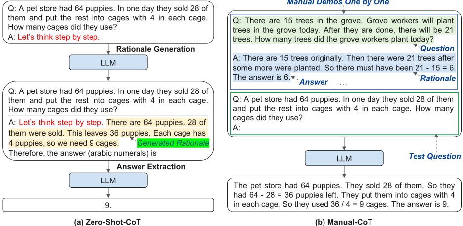
然而，我们发现这一挑战无法通过简单的方案得到有效解决。例如，给定数据集中的一个测试问题，检索语义相似的问题并调用 Zero-Shot-CoT 来生成推理链的做法将会失败。尽管 LLMs 是相当不错的零样本推理器，但它们并不完美：Zero-Shot-CoT 在推理链中仍会犯错。
为了减轻 Zero-Shot-CoT 所产生的推理链错误的影响，我们的分析表明，示例问题的多样性是关键。基于这一洞察，我们提出了一种自动构建示例的 Auto-CoT 方法。Auto-CoT 包含两个主要步骤。首先，将给定数据集中的问题划分为若干簇。其次，从每个簇中选取一个代表性问题，并使用 Zero-Shot-CoT 结合简单的启发式方法生成其推理链。
我们在十个基准测试推理任务上评估了 Auto-CoT，包括：(i) 算术推理（MultiArith [Roy and Roth, 2015]、GSM8K [Cobbe et al., 2021]、AQUA-RAT [Ling et al., 2017]、SVAMP [Patel et al., 2021]）；(ii) 常识推理（CSQA [Talmor et al., 2019]、StrategyQA [Geva et al., 2021]）；(iii) 符号推理（Last Letter Concatenation、Coin Flip）[Wei et al., 2022a]。实验结果表明，在 GPT-3 上，Auto-CoT 始终达到或超过需要人工设计的 Manual-CoT 的性能。这表明大语言模型（LLMs）能够通过自动构建示例来执行 CoT 推理。
本节回顾了构成这项工作基础的两条研究路线：用于多步推理的思维链（chain-of-thought, CoT）提示，以及用于诱导 LLMs 从示例中学习的上下文学习（in-context learning）。
CoT 提示是一种无需梯度的技术，用于诱导 LLMs 产生通向最终答案的中间推理步骤。Wei et al. [2022a] 对语言模型中的 CoT 提示这一主题进行了正式研究。该技术促使 LLMs 生成一系列连贯的中间推理步骤，从而得出问题的最终答案。研究表明，LLMs 可以通过零样本提示（Zero-Shot-CoT）[Kojima et al., 2022] 或人工编写的少样本示例（Manual-CoT）[Wei et al., 2022a] 来执行 CoT 推理。
Zero-Shot-CoT。Kojima et al. [2022] 表明，LLMs 是相当不错的零样本推理器，其生成的推理依据（rationale）已经体现了 CoT 推理。这一发现启发我们的工作利用自生成的推理依据来充当示例。最近的一项工作 [Zelikman et al., 2022] 证明，由 LLMs 生成推理依据是切实可行的。在该工作中，通过提示使 LLM 生成推理依据，并筛选出那些能够导向正确答案的推理依据。这种筛选需要一个由带有标注答案的问题组成的训练数据集。相比之下，我们的工作遵循 Wei et al. [2022a] 和 Kojima et al. [2022] 的 CoT 提示研究，考虑了一个更具挑战性的场景：仅给定一组测试问题（没有训练数据集）。
Manual-CoT。Manual-CoT 通过有效的人工示例激发 CoT 推理能力，从而取得更强的性能。推理过程的示例是人工设计的。然而，在设计问题及其推理链方面所需的人力投入并不小。近期研究并未着手解决这一局限，而是主要聚焦于手工构建更复杂的示例，或利用类似集成（ensemble）的方法。一种趋势是问题分解。在由易到难提示（least-to-most prompting）[Zhou et al., 2022] 中，复杂问题被化归为子问题，然后按顺序求解这些子问题。另一种趋势是针对一个测试问题的多条推理路径进行投票。Wang et al. [2022a] 提出了一种自洽性（self-consistency）解码策略，对 LLMs 的多个输出进行采样，然后对最终答案取多数。Wang et al. [2022b] 和 Li et al. [2022] 在输入空间中引入随机性，以产生更加多样的输出用于投票。他们使用人工设计的示例作为种子集，并生成额外的推理依据：从种子集中留出一个问题，再使用其余示例让 LLM 为该问题生成推理依据。与上述依赖人工设计示例的研究路线不同，我们的工作旨在消除人工设计，同时保持有竞争力的性能。
思维链（CoT）提示与上下文学习（in-context learning，ICL）[Radford et al., 2019, Brown et al., 2020] 密切相关。ICL 通过将少量提示示例作为输入的一部分提供给 LLM，使其能够完成目标任务。在无需梯度更新的情况下，ICL 使单个模型能够通用地执行各种任务。提升 ICL 性能的研究路线有多种：(i) 为测试实例检索相关示例，其中流行的做法是针对给定的测试输入动态检索相关的训练示例 [Rubin et al., 2022, Su et al., 2022]；(ii) 用细粒度信息进行增强，例如融入任务指令 [Mishra et al., 2022, Wei et al., 2022b, Sanh et al., 2022]；(iii) 操纵 LLM 的输出概率，而非直接计算目标标签的似然 [Holtzman et al., 2021, Zhao et al., 2021, Min et al., 2022a]。
尽管 ICL 取得了成功，但已有研究 [Liu et al., 2022a, Lu et al., 2022] 表明，ICL 的效果可能因上下文示例的选择不同而有很大差异 [Liu et al., 2022b]。具体而言，提示的格式（例如示例的措辞或顺序）可能导致性能波动 [Webson and Pavlick, 2022, Zhao et al., 2021]。近期的一项工作 [Min et al., 2022b] 甚至质疑了真实输入-输出映射的必要性：在示例中使用错误标签只会使性能略微下降。然而，现有的 ICL 分析主要基于仅具有简单 <input → output> 映射的标准分类和多选数据集。我们发现，这些发现可能并不适用于具有更复杂 <input → rationale → output> 映射的 CoT 提示场景。例如，<input → rationale> 映射或 <rationale → output> 映射中任一处出现错误，都会导致性能急剧下降（附录 A.1）。
令我们惊讶的是，Retrieval-Q-CoT 在算术数据集 MultiArith [Roy and Roth, 2015] 上的表现不如 Random-Q-CoT（表 1）。需要注意的是，检索方法最初是在带有标注标签的任务中被提出的 [Rubin et al., 2022, Su et al., 2022]，然而，调用 Zero-Shot-CoT 并不能保证推理链完全正确。因此，我们假设 Retrieval-Q-CoT 表现较差的原因在于 ZeroShot-CoT 生成了错误的推理链。为验证这一假设，我们在另外两个训练集带有标注推理链的数据集 GSM8K [Cobbe et al., 2021] 和 AQuA [Ling et al., 2017] 上对 Retrieval-QCoT 进行了实验。结果在表 1 中以 † 标示。在带有标注推理链的设置下，Retrieval-Q-CoT 甚至优于 Manual-CoT。该结果表明，在有人工标注可用时，Retrieval-Q-CoT 是有效的。
| Method | MultiArith GSM8K | MultiArith GSM8K | AQuA |
|---|---|---|---|
| Zero-Shot-CoT | 78.7 | 40.7 | 33.5 |
| Manual-CoT | 91.7 | 46.9 | 35.8 † |
| Random-Q-CoT | 86.2 | 47.6 † | 36.2 † |
| Retrieval-Q-CoT | 82.8 | 48.0 † | 39.7 † |
| Method | MultiArith GSM8K | MultiArith GSM8K | AQuA |
尽管人工标注很有用，但这类人工工作并非易事。然而，通过 Zero-Shot-CoT 自动生成推理链的表现不如 Manual-CoT，尤其是在未解决问题采样这一挑战的情况下。为了设计更有效的 Auto-CoT，我们需要更好地理解其面临的挑战。
由于 Retrieval-Q-CoT 与 Manual-CoT 一样使用了少量提示示例，因此预期 Retrieval-Q-CoT 也应有同样具有竞争力的表现。然而，Retrieval-Q-CoT 中的推理链（包括推理依据和答案）是由 Zero-Shot-CoT 生成的：其中可能存在导致错误答案的错误。我们简单地将答案错误的示例称为错误示例（wrong demonstrations）。直观上，在检索到与测试问题相似的问题之后，由 Zero-Shot-CoT 产生的错误示例可能会误导同一个大语言模型（LLM）对测试问题进行类似的推理并得出错误答案（例如，复制错误）。我们将这一现象称为相似性误导（misleading by similarity）。我们将研究相似性误导是否导致了 Retrieval-Q-CoT 的性能劣势。
首先，我们对 MultiArith 数据集中的全部 600 个问题调用 Zero-Shot-CoT。其中，我们收集了 Zero-Shot-CoT 生成错误答案的那 128 个问题（记为 Q）（错误率：21.3% = 128/600）。如前所述，借助额外的示例，Retrieval-Q-CoT 和 Random-Q-CoT 预期会比 Zero-Shot-CoT 表现得更具竞争力。在 Zero-Shot-CoT 失败的 Q 中，我们将 Retrieval-Q-CoT 或 Random-Q-CoT 仍然失败的那些问题称为它们各自的未解决问题（unresolved questions）。我们将未解决问题的数量除以 128（即 Q 中的问题数量）来计算未解决率（unresolving rate）。未解决率越高，意味着该方法越有可能像 Zero-Shot-CoT 那样仍然犯错。图 2 显示，Retrieval-Q-CoT 的未解决率（46.9%）
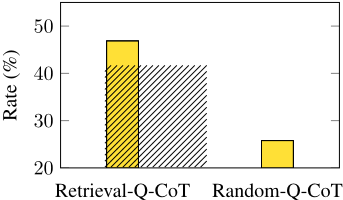
远高于 Random-Q-CoT（25.8%）。这表明，在为测试问题采样相似问题的情况下，Retrieval-Q-CoT 受到了相似性误导的负面影响。
为了表明 Retrieval-Q-CoT 的未解决问题往往彼此相似，我们在表 2 中给出了一个案例研究。在左半部分中，检索到的示例问题与测试问题相似，都在问“他做完剩下的部分需要多长时间？”（'how long will it take him to cook the rest?'）。由 Zero-Shot-CoT 生成的推理链给出的答案针对的是“总量”（'the total of'）而非“剩下的部分”（'the rest'）。受这些示例的引导，Retrieval-Q-CoT 也因误解了“剩下的部分”（'the rest'）的含义而失败。相比之下，得益于相对更加多样（随机）的示例，Random-Q-CoT 能更好地正确理解“剩下的部分”（'the rest'），而没有犯示例中出现的类似错误。
受表 2 中观察结果的启发，我们使用 k-means 将全部 600 道测试题划分为 k = 8 个簇，其中每个簇包含相似的题目。2 借助这些簇以及由 Zero-Shot-CoT 生成的推理链
2 我们使用 Sentence-BERT [Reimers and Gurevych, 2019] 对题目进行编码，并应用 k-means 进行聚类。
| Retrieval-Q-CoT | Random-Q-CoT |
|---|---|
| Q: Achef needs to cook 9 potatoes. He has already cooked 7. If each potato takes 3 minutes to cook, how long will it take him to cook the rest ? A: Let's think step by step. The chef has already cooked 7 potatoes. That means it has taken him 7 * 3 minutes to cook those 7 potatoes. That means it will take him 3 more minutes to cook each of the remaining 2 potatoes. That means it will take him a total of 7 * 3 + 2 * 3 = 21 minutes to cook all 9 potatoes. The answer is 21. 7 Q: A chef needs to cook 13 potatoes. He has already cooked 5. If each potato takes 6 minutes to cook, how long will it take him to cook the rest ? A: Let's think step by step. The chef has already cooked 5 potatoes. That means it has taken him 30 minutes so far. There are 13 potatoes in total. 5 have been cooked so far. That means there are 8 left to cook. Each potato takes 6 minutes to cook. That means it will take the chef 48 minutes to cook the 8 remaining potatoes. In total, it will take the chef 78 minutes to cook all 13 potatoes. The answer is 78. 7 | Q: Wendy uploaded 79 pictures to Facebook. She put 44 pics into one album and put the rest into 5 different albums. How many pictures were in each album? A: Let's think step by step. Wendy uploaded 79 pictures to Facebook. She put 44 pictures into one album. That means she put the rest of the pictures into 5 different albums. That means each album would have (79-44)/5 = 15 pictures in each album. The answer is 15. ✓ Q: At a restaurant each adult meal costs $5 and kids eat free. If a group of 15 people came in and 8 were kids, how much would it cost for the group to eat? A: Let's think step by step. There are 8 kids, so that means there are 7 adults. Each adult meal costs $5, so that means that the 7 adults will cost $5*7=$35. Now we just need to add the two numbers together. $35+8=43$. So it would cost $43 for the group to eat. The answer is 43. 7 |
| Q: A chef needs to cook 15 potatoes. He has already cooked 8. If each potato takes 9 minutes to cook, how long will it take him to cook the rest ? A: Let's think step by step. The chef has already cooked 8 potatoes. That means it has taken him 8 * 9 minutes to cook those 8 potatoes. That means it will take him 9 minutes to cook each of the remaining 7 potatoes. That means it will take him a total of 8 * 9 + 7 * 9 = 135 minutes to cook all 15 potatoes. The answer is 135. 7 | Q: A chef needs to cook 15 potatoes. He has already cooked 8. If each potato takes 9 minutes to cook, how long will it take him to cook the rest ? A: Let's think step by step. The chef needs to cook 15 potatoes. He has already cooked 8. That means he has to cook 15-8=7 more potatoes. Each potato takes 9 minutes to cook. That means it will take him 9*7=63 minutes to cook the rest of the potatoes. The answer is 63. ✓ |
| Retrieval-Q-CoT | Random-Q-CoT |
（见 3.1 节），现在我们想知道某些簇中是否包含 Zero-Shot-CoT 经常失败的题目。因此，我们为每个簇计算了错误率（Zero-Shot-CoT 答案错误的题目数 / 总题目数）。
如图 3 所示，存在一个 Zero-Shot-CoT 错误频发（52.3%）的簇（Cluster 2）。这一现象可能具有普遍性，因为 Zero-Shot-CoT 可能缺乏解决目标任务中一些常见问题所需的技能。3 为便于描述，我们将错误率最高的簇称为高频错误簇（frequent-error cluster）（例如图 3 中的 Cluster 2）。因此，以零样本方式生成的推理链本身并不完善，这使得基于相似度的方法存在在高频错误簇内检索到多个相似题目的风险。对于高频错误簇中的测试题，Retrieval-Q-CoT 更容易构建出包含多个相似错误的示例。结果，Retrieval-Q-CoT 常常犯与 Zero-Shot-CoT 类似的错误，图 2 中其较高的未解决率（unresolving rate）也再次印证了这一点。
迄今为止的分析有力地表明，大语言模型（LLMs）仍不是完美的零样本推理器；因此，我们旨在缓解其 Zero-Shot-CoT 错误所造成的影响，尤其是在 Auto-CoT 的设计中缓解相似性误导。
正如我们稍后将展示的（第 5.5 节），呈现少量错误（例如 8 个示例中有 1 或 2 个错误示例）并不会损害测试题的整体推理性能。假设所有错误示例的问题都落入同一个高频错误簇；那么从每个不同的簇中各采样一个问题，构建出全部 8 个正确示例的概率将高于 7 / 8 = 87.5%。由于不同的簇反映了问题语义的多样性，这种基于聚类的采样方法可以被视为基于多样性的方法，与基于相似性的 Retrieval-Q-CoT 形成鲜明对比。一方面，以多样化方式采样问题可以缓解相似性误导的影响（第 3.1 节）。另一方面，如果我们将每个示例视为一种技能，那么多样化的示例似乎能覆盖更多用于解决目标问题的备选技能：即使示例中仍存在少量（例如 1 / 8）错误，性能也不会受到负面影响（将在图 6 中展示）。
3 当改变簇的数量或使用其他数据集时，我们观察到类似的现象（附录 A.2）。
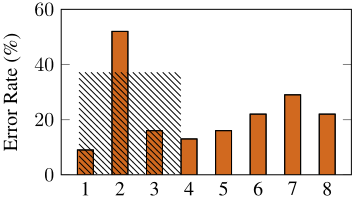
尽管如此，基于聚类的采样方法仍可能构建出少量错误示例，例如来自高频错误簇中的问题。正如我们稍后将展示的，其中一些错误示例可以通过启发式方法加以剔除。例如，错误示例往往伴随着较长的问题和较长的推理依据。使用简单而通用的启发式方法，例如只考虑问题较短且推理依据较短的问题，有助于进一步缓解 Zero-Shot-CoT 能力不完善所带来的影响（附录 C.2）。
基于第 3 节中的观察与考量，我们提出一种 Auto-CoT 方法，用于自动构建由问题和推理链组成的示例。Auto-CoT 包含两个主要阶段：(i) 问题聚类：将给定数据集中的问题划分为若干簇；(ii) 示例采样：从每个簇中选取一个具有代表性的问题，并使用 Zero-Shot-CoT 结合简单启发式方法生成其推理链。整体流程如图 4 所示。
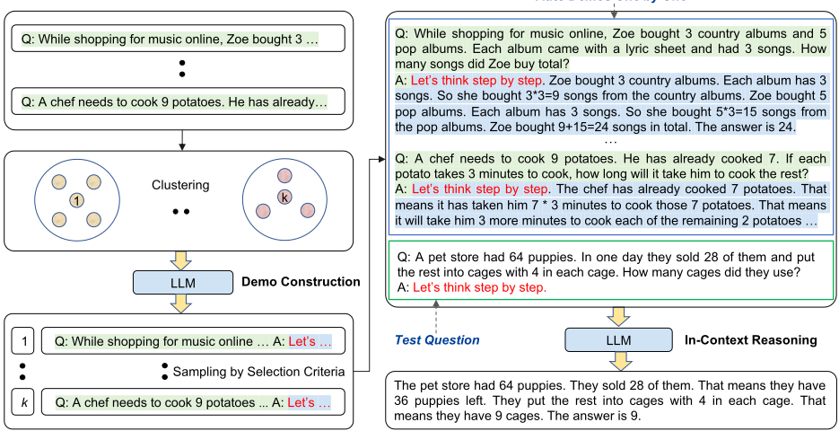
由于基于多样性的聚类可以缓解相似性带来的误导（第 3.3 节），我们对给定的问题集合 Q 进行聚类分析。我们首先通过 Sentence-BERT [Reimers and Gurevych, 2019] 为 Q 中的每个问题计算向量表示。将这些上下文化向量取平均，形成固定尺寸的问题表示。然后，将问题表示通过 k-means 聚类算法处理，生成 k 个问题簇。对于每个簇 i 中的问题，按照到簇 i 中心的距离升序将其排序为列表 q ( i ) = [ q ( i ) 1 , q ( i ) 2 , . . . ]。该问题聚类阶段总结于算法 1 中。
在第二阶段，我们需要为这些采样得到的问题生成推理链，然后采样满足我们选择标准的示例（demonstration）。
更具体地说，我们为每个簇 i ( i = 1 , . . . , k ) 构建一个示例 d ( i )（由一个问题、一个推理依据（rationale）和一个答案拼接而成）。对于簇 i，我们遍历排序列表 q ( i ) = [ q ( i ) 1 , q ( i ) 2 , . . . ]（由算法 1 得到）中的问题，直到满足我们的选择标准。换言之，越接近簇 i 中心的问题会被越早考虑。假设当前正在考虑的是第 j 近的问题 q ( i ) j。提示输入的形式为：[Q: q ( i ) j . A: [P] ]，其中 [P] 是单一提示语 'Let's think step to step'。该构造好的输入通过 Zero-Shot-CoT [Kojima et al., 2022] 被送入大语言模型（LLM），以输出由推理依据 r ( i ) j 和提取出的答案 a ( i ) j 组成的推理链。然后，通过拼接问题、推理依据和答案，为第 i 个簇构建候选示例 d ( i ) j：[ Q: q ( i ) j , A: r ( i ) j ◦ a ( i ) j ]。
与 Wei et al. [2022a] 中手工构建示例的标准类似，我们的选择标准遵循简单的启发式规则，以鼓励采样更简单的问题和推理依据：如果 d ( i ) j 所包含的问题 q ( i ) j 不超过 60 个 token，且其推理依据 r ( i ) j 的推理步骤不超过 5 步，则将选定的示例 d ( i ) 设为 d ( i ) j。4
输入：问题集合 Q 和示例数量 k
输出：每个簇 i ( i = 1 , . . . , k ) 对应的已排序问题 q ( i ) = [ q ( i ) 1 , q ( i ) 2 , . . . ]
1: 过程 CLUSTER( Q , k )
2: 对 Q 中的每个问题 q 执行
3: 使用 Sentence-BERT 对 q 进行编码
4: 将所有编码后的问题表示聚类为 k 个簇
5: 对每个簇 i = 1 , . . . , k 执行
6: 按到簇中心距离的升序对问题 q ( i ) = [ q ( i ) 1 , q ( i ) 2 , . . . ] 进行排序
7: 返回 q ( i ) ( i = 1 , . . . , k )
输入：每个簇 i ( i = 1 , . . . , k ) 的已排序问题 q ( i ) = [ q ( i ) 1 , q ( i ) 2 , . . . ]，空的示例列表 d
输出：示例列表 d = [ d (1) , . . . , d ( k ) ]
1: 过程 CONSTRUCT( q ( i ) , . . . , q ( k ) )
2: 对每个簇 i = 1 , . . . , k 执行
3: 对 q ( i ) 中的每个问题 q ( i ) j 执行
4: 使用 Zero-Shot-CoT 为 q ( i ) j 生成推理依据 r ( i ) j 和答案 a ( i ) j
5: 如果 q ( i ) j , r ( i ) j 满足选择准则，则
6: 将 d ( i ) = [ Q: q ( i ) j , A: r ( i ) j ◦ a ( i ) j ] 加入 d
7: break
8: 返回 d
如算法 2 所总结，在对所有 k 个簇完成示例采样后，将得到 k 个构建出的示例 [ d (1) , . . . , d ( k ) ] 。这些构建出的示例用于增强测试问题 q test，以进行上下文学习（in-context learning）。具体而言，输入是所有示例 [ d (1) , . . . , d ( k ) ] 的拼接，其后接上 [Q: q test . A: [P] ]。将该输入馈送给 LLM，即可为 q test 得到末尾带有答案的推理链（图 4 右侧）。
我们简要描述实验设置，并给出主要实验结果。更多实验细节和结果可参见附录。
任务与数据集。我们的方法在来自三类推理任务的十个基准测试（benchmark）数据集上进行评估：(i) 算术推理（MultiArith [Roy and Roth, 2015]、GSM8K [Cobbe et al., 2021]、AddSub [Hosseini et al., 2014]、AQUA-RAT [Ling et al., 2017]、SingleEq [Koncel-Kedziorski et al., 2015]、SVAMP [Patel et al., 2021]）；(ii) 常识推理（CSQA [Talmor et al., 2019]、StrategyQA [Geva et al., 2021]）；(iii) 符号推理（Last Letter Concatenation、Coin Flip）[Wei et al., 2022a]。
实现。除非另有说明，我们使用公开的 GPT-3 [Brown et al., 2020]（text-davinci-002 版本，175B 参数）作为大语言模型（LLM）[Ouyang et al., 2022]。我们选择该 LLM 是因为，正如 Kojima et al. [2022] 和 Wei et al. [2022a] 所报告的，它在公开 LLM 中具有最强的思维链（CoT）推理性能。我们还评估了 Codex 模型 [Chen et al., 2021]（code-davinci-002）作为 LLM。遵循 Wei et al. [2022a]，示例数量 k 为 8，但 AQuA 和 Letter（4）、CSQA（7）以及 StrategyQA（6）除外。
4 由于 Zero-Shot-CoT 通常使用 ' \ n' 来分隔推理步骤，因此该规则可以通过统计生成的推理依据中 ' \ n' 词元的数量来轻松实现。
| Model.Model | Arithmetic.MultiArith | Arithmetic.GSM8K | Arithmetic.AddSub | Arithmetic.AQuA | Arithmetic.SingleEq | Arithmetic.SVAMP | Commonsense.CSQA | Commonsense.Strategy | Symbolic.Letter | Symbolic.Coin |
|---|---|---|---|---|---|---|---|---|---|---|
| Zero-Shot | 22.7 | 12.5 | 77 | 22.4 | 78.7 | 58.8 | 72.6 | 54.3 | 0.2 | 53.8 |
| Zero-Shot-CoT | 78.7 | 40.7 | 74.7 | 33.5 | 78.7 | 63.7 | 64.6 | 54.8 | 57.6 | 91.4 |
| Few-Shot | 33.8 | 15.6 | 83.3 | 24.8 | 82.7 | 65.7 | 79.5 | 65.9 | 0.2 | 57.2 |
| Manual-CoT | 91.7 | 46.9 | 81.3 | 35.8 | 86.6 | 68.9 | 73.5 | 65.4 | 59 | 97.2 |
| Auto-CoT | 92 | 47.9 | 84.8 | 36.5 | 87 | 69.5 | 74.4 | 65.4 | 59.7 | 99.9 |
| Model.Model | Arithmetic.MultiArith | Arithmetic.GSM8K | Arithmetic.AddSub | Arithmetic.AQuA | Arithmetic.SingleEq | Arithmetic.SVAMP | Commonsense.CSQA | Commonsense.Strategy | Symbolic.Letter | Symbolic.Coin |
基线方法。我们将我们的方法与四种基线方法进行比较：Zero-Shot [Kojima et al., 2022]、Zero-Shot-CoT [Kojima et al., 2022]、Few-Shot [Wei et al., 2022a] 以及 Manual-CoT [Wei et al., 2022a]。Zero-Shot-CoT 和 Manual-CoT 在图 1 中进行了展示。Zero-Shot 基线将一个测试问题与提示 'The answer is' 拼接作为 LLM 输入。Few-Shot 基线与 Manual-CoT 具有相同的 LLM 输入，区别仅在于从所有示例中移除了推理依据。
表 3 比较了来自三类推理任务的十个数据集上的准确率。Zero-Shot 和 Zero-Shot-CoT 的结果取自 Kojima et al. [2022]，Few-Shot 和 Manual-CoT 的结果取自 Wei et al. [2022a]，Auto-CoT 的结果为三次随机运行的平均值。总体而言，Auto-CoT 始终达到或超过需要人工设计示例的 CoT 范式的性能。由于人工设计的成本，Manual-CoT 可能为多个数据集设计相同的示例（例如，5 / 6 个
| Method | MultiArith | GSM8K | AddSub |
|---|---|---|---|
| Zero-Shot-CoT | 64.8 | 31.8 | 65.6 |
| Manual-CoT | 96.8 | 59.4 | 84.6 |
| Auto-CoT | 93.2 | 62.8 | 91.9 |
| Method | MultiArith | GSM8K | AddSub |
算术数据集）。相比之下，Auto-CoT 更加灵活且更具任务自适应性：每一个数据集都会获得自动构建的专属示例。
图 5 采用主成分分析（PCA）投影，可视化了十个数据集中的问题聚类。该图表明存在通用模式，不同的模式可能由来自不同簇的问题所刻画。我们在附录 D 中展示了 Auto-CoT 构建的示例。
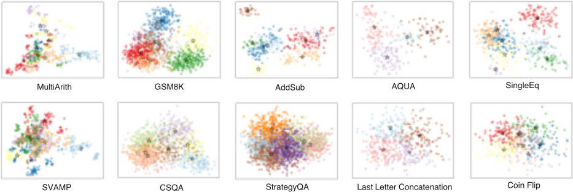
#5
为了评估 Auto-CoT 在使用不同大语言模型（LLM）时的通用有效性，我们在此将 LLM 更换为 Codex 模型 [Chen et al., 2021]。如表 4 所示，与使用 GPT-3 (text-davinci-002) LLM 的表 3 相比，Codex LLM 为 Manual-CoT 带来了性能提升。尽管如此，在使用 Codex LLM 的情况下，Auto-CoT 的总体性能与 Manual-CoT 相比仍然具有竞争力，这为 Auto-CoT 的有效性提供了额外的实证证据。
回顾我们在 3.3 节中的讨论，可能存在错误的示例（即其答案是错误的示例）。为了考察多样性是否能缓解这一影响，我们设计了一个 In-Cluster Sampling（簇内采样）基线，该基线通过从包含测试问题的同一簇中随机抽取问题来构建示例。图 6 比较了在 MultiArith 上不同数量错误示例下的准确率。与 In-Cluster Sampling 相比，Auto-CoT（使用基于多样性的聚类）受错误示例的影响较小：即使面对 50% 的错误示例，其性能仍不会显著下降。
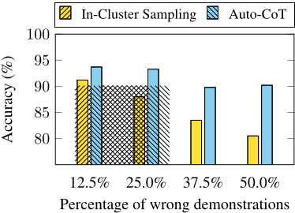
思维链（CoT）研究通常假设已经给定了一个包含测试问题的完整数据集 [Wei et al., 2022a, Kojima et al., 2022]。基于给定的数据集，Auto-CoT 通过对问题进行采样来构建示例。尽管如此，现在我们考虑一个更具挑战性的流式设定：如同数据流那样，每次到达一小批测试问题（例如 m 个问题）。
为应对这一挑战，我们将 Auto-CoT 扩展为一个自举（bootstrapping）版本 Auto-CoT*：(i) 初始化一个空集 M 0；(ii) 当第 1 批问题 q (1) 1 , . . . , q (1) m 到达时，对每个 q (1) i 调用 Zero-Shot-CoT（由于 m 较小而不进行聚类）以获得其推理链 c (1) i 。将问题-推理链对 ( q (1) 1 , c (1) 1 ) , . . . , ( q (1) m , c (1) m ) 加入 M 0，并将所得的新集合称为 M 1；(iii) 当第 b 批（ b > 1 ）问题 q ( b ) 1 , . . . , q ( b ) m 到达时，利用 M b - 1 中已有的问题和推理链构建示例（如同 Auto-CoT 那样），并将这些示例用于对每个 q ( b ) i 进行上下文推理。将问题-推理链对 ( q ( b ) 1 , c ( b ) 1 ) , . . . , ( q ( b ) m , c ( b ) m ) 加入 M b - 1，并将所得的新集合称为 M b 。
图 7 比较了在此流式设定下每个批次（ m = 30 ）在 MultiArith 上的准确率（扩展版本：附录中的图 11）。正如预期，对于第 1 批，Auto-CoT* 与 Zero-Shot-CoT 获得相同的准确率。从第 2 批起，Auto-CoT* 的表现与 Manual-CoT 相当。这一结果表明，我们的方法在更具挑战性的流式设定中依然有效。
大语言模型（LLM）已通过思维链（CoT）提示展现出了推理能力。Manual-CoT 的优越性能依赖于示例的手工制作。为了消除这类人工设计，我们提出了 Auto-CoT 来自动构建示例。该方法对具有多样性的问题进行采样，并生成推理链来构建示例。在十个公开的基准测试（benchmark）推理数据集上的实验结果表明，在使用 GPT-3 的情况下，Auto-CoT 的性能始终与需要人工设计示例的 CoT 范式相当或更优。
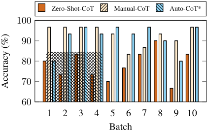
A demonstration is a triple composed by <question, rationale, answer> as shown in Figure 1. We shuffle either of the demonstration components to see how the performance changes. According to the results in Table 5, shuffling questions has the least performance reduction ( 91 . 7% → 73 . 8% ). A possible reason for the decent performance is that the model may capture the rationale-answer mapping patterns. The pattern is expected to reflect how the intermediate reasoning steps can lead to the final answer. This finding shows that it is possible to leverage the generated rationales by Zero-Shot-CoT because those rationales are often logically correct even though they may lead to wrong answers [Kojima et al., 2022].
| Method | Accuracy |
|---|---|
| Manual-CoT | 91.7 |
| Shuffle Questions | 73.8 |
| Shuffle Rationales | 43.8 |
| Shuffle Answers | 17 |
| Method | Accuracy |
In contrast, shuffling either rationales or answers reduces the accuracy significantly ( 91 . 7% → 43 . 8% / 17 . 0% ). The observation indicates that the rationale-answer consistency is critical. This kind of mismatch actually happens in Zero-Shot-CoT. An example is shown in Table 6. Using such demonstrations might teach the model illusion-predicting answers without basis.
Q: For the school bake sale Wendy made pastries. She baked 4 cupcakes and 29 cookies. After the sale she had 24 to take back home. How many pastries did she sell?
A: Let's think step by step. Wendy made 4 cupcakes and 29 cookies. She sold some pastries. She had 24 to take back home. How many pastries did she sell?We can set up an equation to solve this problem. Wendy made 4 cupcakes and 29 cookies. She sold some pastries. She had 24 to take back home. How many pastries did she sell?We can set up an equation to solve this problem. 4 cupcakes + 29 cookies - pastries sold = 24 past. The answer is 29. 7
Q: A chef needs to cook 13 potatoes. He has already cooked 5. If each potato takes 6 minutes to cook, how long will it take him to cook the rest?
A: Let's think step by step. A chef needs to cook 15 potatoes. He has already cooked 8. If each potato takes 9 minutes to cook, how long will it take him to cook the rest?We can set up an equation to solve this problem. A chef needs to cook 15 potatoes. He has already cooked 8. If each potato takes 9 minutes to cook, how long will it take him to cook the rest?We can set up an equation to solve this problem. 8 potatoes + (15-8) potatoes = 15 potatoes. The answer is 72 minutes. 7
为了验证 Zero-Shot-CoT 是否会在类似的问题上出错，我们将问题聚类为若干簇，并计算每个簇中问题答案的错误率。如图 8 所示，在不同数据集上，错误往往集中出现在一个或多个簇中。如图 9 所示，当簇数量发生变化时，我们观察到类似的现象。该现象表明其具有普遍性：Zero-Shot-CoT 可能缺乏解决目标任务中某些常见问题所需的技能。我们将错误率最高的簇称为高频错误簇（frequent-error cluster）。因此，生成的推理链的不完善特性给基于相似度的检索带来了风险，即可能检索到高频错误簇内的一组相似问题。
我们的方法在十个基准测试（benchmark）数据集上进行了评估，这些数据集涵盖算术推理、常识推理和符号推理任务。各数据集的统计信息如表 7 所示。
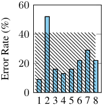
(a) MultiArith (
=43)
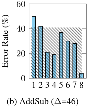
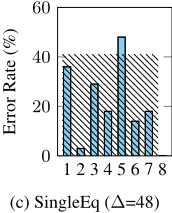
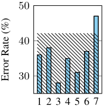
(d) CSQA (
=19)
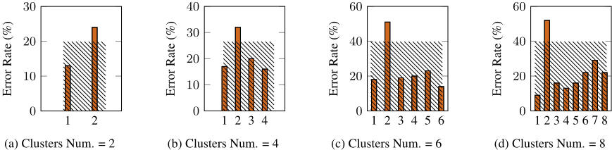
算术推理。对于算术推理，我们考虑以下六个数据集：(i) MultiArith [Roy and Roth, 2015]、(ii) GSM8K [Cobbe et al., 2021]、(iii) AddSub [Hosseini et al., 2014]、(iv) AQUA [Ling et al., 2017]、(v) SingleEq [Koncel-Kedziorski et al., 2015] 以及 (vi) SVAMP [Patel et al., 2021]。前三个来自经典的数学应用题库（Math World Problem Repository）[Koncel-Kedziorski et al., 2016]，后三个来自较新的 benchmark。
常识推理。对于常识推理，我们使用 (i) CommonsenseQA（CSQA）[Talmor et al., 2019] 和 (ii) StrategyQA [Geva et al., 2021]。CommonsenseQA 所提出的问题具有复杂语义，通常需要基于先验知识进行推理 [Talmor et al., 2019]。StrategyQA 要求模型推断出隐式的多跳推理来回答问题 [Geva et al., 2021]。
符号推理。对于符号推理，我们使用 (i) Last Letter Concatenation [Wei et al., 2022a] 和 (ii) Coin Flip 任务 [Wei et al., 2022a]。Last letter Concatenation 要求模型将每个单词的最后一个字母拼接起来。Coin Flip 的目标是回答在人们翻转或不翻转硬币之后，硬币是否仍然正面朝上。
| Dataset | Number of samples | Average words | Answer Format | Licence |
|---|---|---|---|---|
| MultiArith | 600 | 31.8 | Number | Unspecified |
| AddSub | 395 | 31.5 | Number | Unspecified |
| GSM8K | 1319 | 46.9 | Number | MIT License |
| AQUA | 254 | 51.9 | Multiple choice | Apache-2.0 |
| SingleEq | 508 | 27.4 | Number | No License |
| SVAMP | 1000 | 31.8 | Number | MIT License |
| CSQA | 1221 | 27.8 | Multiple choice | Unspecified |
| StrategyQA | 2290 | 9.6 | Yes or No | Apache-2.0 |
| Last Letters | 500 | 15 | String | Unspecified |
| Coin Flip | 500 | 37 | Yes or No | Unspecified |
| Dataset | Number of samples | Average words | Answer Format | Licence |
除非另有说明，我们使用 text-davinci-002 版本、具有 175B 参数的 GPT-3 [Brown et al., 2020] 作为大语言模型（LLM）[Ouyang et al., 2022]。我们选择该模型是因为它是公开可用的，并且被广泛用于评估 LLM 的思维链（CoT）推理能力 [Wei et al., 2022a, Kojima et al., 2022]。该模型通过 OpenAI API 访问。5 我们使用贪心解码来生成输出。我们设置 max_tokens = 256 且 temperature = 0。遵循 Wei et al. [2022a]，用于上下文学习（in-context learning）的示例数量 k 在大多数任务中为 8，但 AQuA 和 Last Letter Concatenation 中为 4，CSQA 中为 7，StrategyQA 中为 6。
我们比较了在每个簇内对问题进行排序的不同方式，包括：(i) 与簇中心的最小距离（In-Cluster Min Dist，即 Auto-CoT 所采用的方式），(ii) 与簇中心的最大距离（In-Cluster Max Dist），以及 (iii) 簇内随机采样（In-Cluster Random）。为了减轻错误示例的影响，我们在该分析中仅采样答案正确的示例。
| Method | MultiArith |
|---|---|
| Auto-CoT | 93.7 |
| In-Cluster Min Dist | 93.7 |
| In-Cluster Random | 89.2 |
| In-Cluster Max Dist | 88.7 |
| Method | MultiArith |
比较表 8 中的结果可以发现，示例越接近簇中心，通常效果越好。
在第 4 节中，我们应用简单启发式方法来促使模型使用简单而准确的示例。与 Wei 等人 [2022a] 中手工构造示例的标准类似，我们的选择标准遵循简单启发式方法，以鼓励采样更简单的问题和推理过程：将所选示例 d ( i ) 设为 d ( i ) j，条件是它具有不超过 60 个 token 的问题 q ( i ) j 以及不超过 5 个推理步骤的推理过程 r ( i ) j。6 对于除 AQuA 之外的算术推理任务（因为 AQuA 是多项选择题），我们要求 a ( i ) j 非空且出现在 r ( i ) j 中 7，以降低推理过程与答案不匹配的风险（正如我们在附录 A.1 中发现此类错误是有害的）。如果问题、推理过程和答案满足上述条件，则通过拼接问题、推理过程和答案来为第 i 个簇构建候选示例 d ( i ) j：[ Q: q ( i ) j , A: r ( i ) j ◦ a ( i ) j ] 。
| MultiArith AddSub GSM8K AQuA SingleEq SVAMP CSQA Strategy Letter Coin.Num. of Demos | MultiArith AddSub GSM8K AQuA SingleEq SVAMP CSQA Strategy Letter Coin.8 | MultiArith AddSub GSM8K AQuA SingleEq SVAMP CSQA Strategy Letter Coin.8 | MultiArith AddSub GSM8K AQuA SingleEq SVAMP CSQA Strategy Letter Coin.8 | MultiArith AddSub GSM8K AQuA SingleEq SVAMP CSQA Strategy Letter Coin.4 | MultiArith AddSub GSM8K AQuA SingleEq SVAMP CSQA Strategy Letter Coin.8 | MultiArith AddSub GSM8K AQuA SingleEq SVAMP CSQA Strategy Letter Coin.8 | MultiArith AddSub GSM8K AQuA SingleEq SVAMP CSQA Strategy Letter Coin.7 | MultiArith AddSub GSM8K AQuA SingleEq SVAMP CSQA Strategy Letter Coin.6 | MultiArith AddSub GSM8K AQuA SingleEq SVAMP CSQA Strategy Letter Coin.4 | MultiArith AddSub GSM8K AQuA SingleEq SVAMP CSQA Strategy Letter Coin.8 |
|---|---|---|---|---|---|---|---|---|---|---|
| Simple heuristics w/o heuristics | 0.3 | 1.7 | 1.7 | 1 | 1 | 0.7 | 2.7 | 2.3 | 0 | 0 |
| Simple heuristics w/o heuristics | 1.3 | 5 | 3 | 2.7 | 2 | 3.3 | 3.3 | 2.3 | 3 | 1 |
| MultiArith AddSub GSM8K AQuA SingleEq SVAMP CSQA Strategy Letter Coin.Num. of Demos | MultiArith AddSub GSM8K AQuA SingleEq SVAMP CSQA Strategy Letter Coin.8 | MultiArith AddSub GSM8K AQuA SingleEq SVAMP CSQA Strategy Letter Coin.8 | MultiArith AddSub GSM8K AQuA SingleEq SVAMP CSQA Strategy Letter Coin.8 | MultiArith AddSub GSM8K AQuA SingleEq SVAMP CSQA Strategy Letter Coin.4 | MultiArith AddSub GSM8K AQuA SingleEq SVAMP CSQA Strategy Letter Coin.8 | MultiArith AddSub GSM8K AQuA SingleEq SVAMP CSQA Strategy Letter Coin.8 | MultiArith AddSub GSM8K AQuA SingleEq SVAMP CSQA Strategy Letter Coin.7 | MultiArith AddSub GSM8K AQuA SingleEq SVAMP CSQA Strategy Letter Coin.6 | MultiArith AddSub GSM8K AQuA SingleEq SVAMP CSQA Strategy Letter Coin.4 | MultiArith AddSub GSM8K AQuA SingleEq SVAMP CSQA Strategy Letter Coin.8 |
我们在使用简单启发式方法之前和之后分别运行示例构建过程三次，以量化其效果。表 9 展示了比较结果。简单启发式方法降低了构建示例时错误推理过程的平均数量。图 10 进一步描绘了使用与不使用简单启发式方法时的错误率。错误率的计算方式为错误推理过程的平均数量除以示例数量。我们可以看到，我们的方法能在大多数任务（7/10）中将错误率保持在 20% 以下。
5 我们的实验于 2022 年 7 月至 2022 年 9 月期间使用 OpenAI API 运行。
6 由于 Zero-Shot-CoT 通常使用 ' \ n' 来分隔推理步骤，因此可以通过统计生成的推理过程中 ' \ n' token 的数量来轻松实现该规则。
7 在算术推理任务中，推理过程通常在最后几个 token 处推导出其答案，如附录 D 中所示的示例。
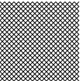
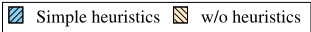
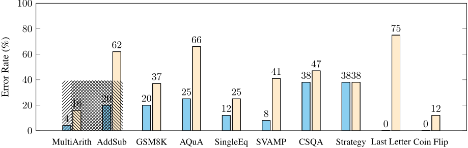
在第 5.6 节中，我们讨论了 Auto-CoT 在更具挑战性的流式设置中的应用，即像数据流一样，每次到达一小批测试问题（例如 m 个问题）。
由于页面篇幅限制，我们在第 5.6 节中仅展示了前 10 个批次（共 300 个测试问题）的结果。在图 11 中，我们展示了 MultiArith 中全部 600 个测试问题上每个批次的准确率。正如预期的那样，对于批次 1，Auto-CoT* 与 Zero-Shot-CoT 获得了相同的准确率。从批次 2 开始，Auto-CoT* 很快就表现得与 Manual-CoT 相当。这一结果表明，我们的方法在更具挑战性的流式设置中仍然有效。
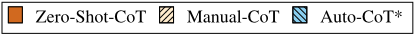
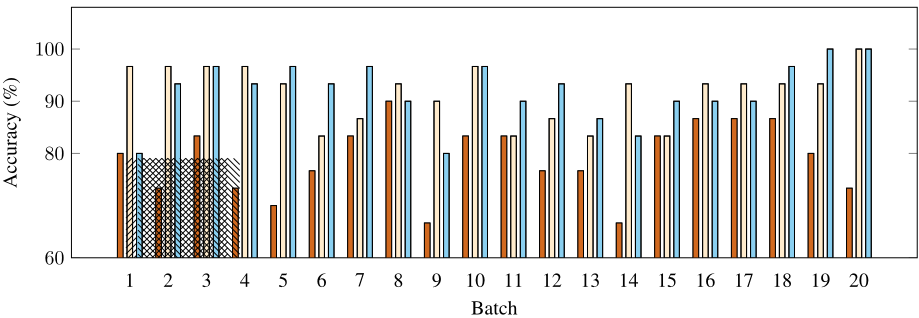
表 10：为 MultiArith 自动构建的示例。
问：万圣节时，Katie 和她姐姐把她们收到的糖果合在了一起。Katie 有 8 颗糖果，而她姐姐有 23 颗。如果她们第一晚吃了 8 颗，那么她们还剩多少颗糖果？
答：让我们一步一步思考。Katie 和她姐姐总共有 8 + 23 = 31 颗糖果。如果她们第一晚吃掉 8 颗，那么还剩 31 - 8 = 23 颗。答案是 23。
问：一家宠物店有 78 只幼犬。一天之内他们卖掉了其中 30 只，并把剩下的幼犬放进笼子里，每个笼子放 8 只。他们用了多少个笼子？
答：让我们一步一步思考。共有 78 只幼犬。卖掉了 30 只，也就是说还剩 48 只。48 除以 8 等于 6，也就是说有 6 个笼子，每个笼子里有 8 只幼犬。答案是 6。
问：一名服务员要接待 14 位顾客。如果有 3 位顾客离开，他又迎来了另外 39 位顾客，那么他会有多少位顾客？
答：让我们一步一步思考。这名服务员要接待 14 位顾客。如果有 3 位顾客离开，也就是说他会剩下 11 位顾客。如果他又迎来 39 位顾客，也就是说他总共有 50 位顾客。答案是 50。
问：Bianca 正在整理她的书柜，确保每个书架上恰好放 8 本书。如果她有 5 个书架放推理小说、4 个书架放图画书，那么她总共有多少本书？
答：让我们一步一步思考。有 5 个书架放推理小说。每个书架有 8 本书。所以有 40 本推理小说。有 4 个书架放图画书。每个书架有 8 本书。所以有 32 本图画书。40 + 32 = 72 本书。答案是 72。
问：Wendy 向 Facebook 上传了 45 张照片。她把 27 张照片放进一个相册，把其余的照片放进 9 个不同的相册。每个相册里有多少张照片？
答：让我们一步一步思考。首先，我们知道 Wendy 总共上传了 45 张照片。其次，我们知道 Wendy 把 27 张照片放进了一个相册。这意味着 Wendy 把剩下的 18 张照片放进了 9 个不同的相册。这意味着每个相册会有 2 张照片。答案是 2。
问：一个知识竞赛队总共有 7 名队员，但在一场比赛中 2 名队员没有到场。如果每位到场的队员得了 4 分，那么总共得了多少分？
答：让我们一步一步思考。队里有 7 名队员，但有 2 名队员没有到场。也就是说有 5 名队员到场了。每位到场的队员得了 4 分。所以如果 5 名队员每人得 4 分，那么总得分为 5*4=20。答案是 20。
问：Mike 整个夏天修剪草坪赚了 69 美元。如果他花 24 美元购买了新的割草机刀片，那么他用剩下的钱可以买多少个 5 美元的游戏？
答：让我们一步一步思考。Mike 修剪草坪赚了 $69。他花 $24 购买了新的割草机刀片。也就是说他还剩 $45。每个游戏售价 $5，所以他可以买 9 个游戏。答案是 9。
Q: 学校食堂为学生午餐订购了 8 个红苹果和 43 个青苹果。但是，如果只有 42 名学生想要水果，食堂最终会多出多少个苹果？
A: 让我们一步一步思考。学校食堂为学生午餐订购了 8 个红苹果和 43 个青苹果。这意味着他们总共订购了 51 个苹果。但是，如果只有 42 名学生想要水果，这意味着学校食堂会剩下 9 个苹果。答案是 9。
Q: 萨莉从柠檬树上摘了 7 个柠檬，玛丽摘了 9 个柠檬。总共摘了多少个柠檬？
A: 让我们一步一步思考。萨莉摘了 7 个柠檬，玛丽摘了 9 个柠檬。所以我们可以说萨莉摘了 7 个柠檬，玛丽摘了 9 个柠檬。所以我们可以说总共摘了 7 + 9 = 16 个柠檬。答案是 16。
Q: 戈登为班级聚会买了 3.42 磅水果。班级吃了 2.2 磅水果。还剩多少水果？
A: 让我们一步一步思考。戈登买了 3.42 磅水果。班级吃了 2.2 磅水果。这意味着还剩 3.42 - 2.2 = 1.22 磅水果。答案是 1.22。
Q: 玛丽的存钱罐里有 21 枚 10 美分硬币和 38 枚 1 美分硬币。她爸爸向玛丽借走了 18 枚 1 美分硬币。她现在有多少枚 1 美分硬币？
A: 让我们一步一步思考。玛丽的存钱罐里有 21 枚 10 美分硬币和 38 枚 1 美分硬币。她爸爸向玛丽借走了 18 枚 1 美分硬币。所以现在，玛丽的存钱罐里有 21 枚 10 美分硬币和 20 枚 1 美分硬币。答案是 20。
Q: 琼在海滩上捡到了 72 个贝壳和 12 只海星。她把一些贝壳给了艾莉莎。她现在有 28 个贝壳。她给了艾莉莎多少个贝壳？
A: 让我们一步一步思考。琼捡到了 72 个贝壳和 12 只海星。她把一些贝壳给了艾莉莎。所以我们需要算出她给了艾莉莎多少个贝壳。琼有 28 个贝壳。所以她给了艾莉莎 44 个贝壳。答案是 44。
Q: 去年，某国有 90171 人出生，还有 16320 人移民到该国。去年有多少新居民开始在这个国家生活？
A: 让我们一步一步思考。首先，该国有 90171 人出生。然后，有 16320 人移民到该国。这意味着去年有 90171 + 16320 = 106491 名新居民在这个国家生活。答案是 106491。
Q: 一家建筑公司正在重新铺设一条受损的道路。到目前为止，他们已经总共铺设了 4938 英寸的道路。今天，他们铺设了 805 英寸的道路。在今天之前他们已经铺设了多少英寸的道路？
A: 让我们一步一步思考。该公司已经总共铺设了 4938 英寸的道路。今天，他们铺设了 805 英寸的道路。所以在今天之前，他们已经铺设了 4938 - 805 = 4133 英寸的道路。答案是 4133。
Q: 抽屉里有 5 把剪刀和 3 支铅笔。杰森把 4 把剪刀放进了抽屉。现在抽屉里总共有多少把剪刀？
A: 让我们一步一步思考。抽屉里有 5 把剪刀和 3 支铅笔。杰森把 4 把剪刀放进了抽屉。现在，抽屉里有 9 把剪刀。答案是 9。
Q: 公园里目前有 37 棵矮灌木和 30 棵高树。公园工作人员今天将种植 20 棵矮灌木。等工作人员完成后，公园里会有多少棵矮灌木？
A: 让我们一步一步思考。公园里目前有 37 棵矮灌木和 30 棵高树。公园工作人员今天将种植 20 棵矮灌木。这意味着等工作人员完成后，公园里总共会有 57 棵矮灌木。答案是 57。
表 12：为 GSM8K 自动构建的示例。
Q: 两列火车同时离开圣拉斐尔（San Rafael）。它们开始向西行驶，都行驶了 80 英里。第二天，它们向北行驶，行驶了 150 英里。问每列火车在这两天中行驶的距离是多少？
A: 让我们一步一步思考。第一天，两列火车都行驶了 80 英里。所以第一列火车行驶了 80 英里，第二列火车也行驶了 80 英里。第二天，两列火车都行驶了 150 英里。所以第一列火车行驶了 150 英里，第二列火车也行驶了 150 英里。总计，第一列火车行驶了 230 英里，第二列火车也行驶了 230 英里。答案是 230。
Q: 一个水箱在周一的水深为 17 英尺。周二，水箱里的水多了 7 英尺。周三，水深是周二的三分之二。问周三水箱的水深是多少？
A: 让我们一步一步思考。周一，水深为 17 英尺。周二，水深比周一多 7 英尺，所以水深为 24 英尺。周三，水深是周二的三分之二，所以水深为 16 英尺。答案是 16。
Q: 在一元店里，Sloane 数了 100 名进入商店的顾客。第二天，她数到的顾客比第一天多 50 名。如果到第三天为止顾客总数为 500，那么她在第三天数到了多少名顾客？
A: 让我们一步一步思考。第一天，Sloane 数到了 100 名顾客。第二天，她数到的顾客比第一天多 50 名。所以，第二天她数到了 150 名顾客。第三天，她数到了 500 名顾客。因此，在第三天，Sloane 数到了 500 名顾客。答案是 500。
Q: Laurel 的朋友送给她 24 套她的孩子不再需要的婴儿服装。在她的迎婴派对（baby shower）上，Laurel 收到了两倍数量的新婴儿服装。然后，Laurel 的妈妈又送给她另外 15 套婴儿服装。问她一共有多少套给宝宝的服装？
A: 让我们一步一步思考。Laurel 的朋友送给她 24 套婴儿服装。所以她有 24 套婴儿服装。在她的迎婴派对上，Laurel 收到了两倍数量的新婴儿服装。所以她有 48 套婴儿服装。然后，Laurel 的妈妈又送给她另外 15 套婴儿服装。所以她有 63 套婴儿服装。答案是 63。
Q: Pam 和 Fred 去了游乐场。Pam 坐了 2 次过山车，而 Fred 坐了 4 次。之后，他们俩各自决定坐 2 次旱地雪橇（luge）。如果每次乘坐需要 6 张票，那么他们那天一共用了多少张票？
A: 让我们一步一步思考。Pam 坐了 2 次过山车。所以，那是 2 * 6 = 12 张票。Fred 坐了 4 次过山车。所以，那是 4 * 6 = 24 张票。Pam 坐了 2 次旱地雪橇。所以，那是 2 * 6 = 12 张票。Fred 坐了 2 次旱地雪橇。所以，那是 2 * 6 = 12 张票。总计，他们用了 12 + 24 + 12 + 12 = 60 张票。答案是 60。
Q: 八年级班级举办了一场烘焙比赛。Kelsie 做的饼干数量是 Josh 的两倍。Josh 做的饼干数量是 Suzanne 做的四分之一。如果 Suzanne 做了 36 块饼干，那么 Kelsie 做了多少块？
A: 让我们一步一步思考。Josh 做的饼干数量是 Suzanne 做的四分之一。所以如果 Suzanne 做了 36 块饼干，Josh 就做了 9 块饼干。Kelsie 做的饼干数量是 Josh 的两倍。所以如果 Josh 做了 9 块饼干，Kelsie 就做了 18 块饼干。答案是 18。
Q: Jane 在过去 8 周里每周从零花钱中存下 4 美元。如果她继续每周存下相同的金额，她还需要多少周才能总共存到 60 美元？
A: 让我们一步一步思考。Jane 在过去 8 周里每周从零花钱中存下 4 美元。这意味着她到目前为止已经存了 32 美元。$60 - $32 = $28 $28 / $4 = 7 Jane 还需要 7 周才能总共存到 60 美元。答案是 7。
Q: Mia 和 Emma 目前的年龄相差 16 岁。如果比 Emma 年轻的 Mia 现在是 40 岁，那么她们年龄的平均值是多少？
A: 让我们一步一步思考。Mia 目前是 16 岁。Mia 比 Emma 年轻。Mia 是 40 岁。因此，Emma 一定是 40 + 16 = 56 岁。她们年龄的平均值是 (40 + 56)/2 = 48 岁。答案是 48。
表 13：为 AQuA 自动构建的示例。
Q: Julie 的院子是长方形的。院子的一边宽 100 英尺。院子的总面积是 3,000 平方英尺。院子另一边的长度是多少？答案选项：(A) 30 英尺 (B) 20 英尺 (C) 10 英尺 (D) 50 英尺 (E) 60 英尺
A: 让我们一步一步思考。我们知道院子是长方形的，所以它有四条边。我们还知道院子的一边宽 100 英尺。院子的总面积是 3,000 平方英尺。我们可以列出方程：3,000 = 100x x = 30 所以，院子另一边的长度是 30 英尺。答案是 A。
Q: 在一袋红色和绿色糖果中，红色糖果与绿色糖果的比例为 3:4。如果这袋糖果中含有 120 颗绿色糖果，那么有多少颗红色糖果？答案选项：(A) 90 (B) 80 (C) 95 (D) 100 (E) 85
A: 让我们一步一步思考。每 4 颗绿色糖果对应 3 颗红色糖果。这意味着每 12 颗糖果中，就有 9 颗红色糖果。这意味着每 120 颗绿色糖果，就有 90 颗红色糖果。答案是 (A)。答案是 A。
Q: 一辆汽车以 60 km/hr 的速度用 20 小时完成了一段旅程。如果要在 10 小时内行驶相同的距离，汽车的速度需要提高多少？答案选项：(A) 80 kmph (B) 50 kmph (C) 120 kmph (D) 70 kmph (E) 80 kmph
A: 让我们一步一步思考。汽车目前以 60 km/hr 的速度行驶。为了在 10 小时内行驶相同的距离，汽车需要以 6 倍的速度行驶，即 360 km/hr。因此，汽车需要提高 300 km/hr。答案是 C。答案是 C。
Q: Mark 对 John 说：“如果你把你一半的钱给我，我就有 Rs.75。” John 说：“如果你把你三分之一的钱给我，我就有 Rs.75/-。” John 有多少钱？答案选项：(A) 22 (B) 60 (C) 28 (D) 26 (E) 18
A: 让我们一步一步思考。如果 Mark 有 Rs.75，那么 John 也有 Rs.75。如果 Mark 把他一半的钱给 John，那么 Mark 将有 Rs.37.50，John 将有 Rs.112.50。然而，这不是答案选项之一。如果 Mark 把他三分之一的钱给 John，那么 Mark 将有 Rs.50，John 将有 Rs.100。这是答案选项之一，所以 John 一开始必定有 Rs.100。答案是 D。
表 14：为 SingleEq 自动构建的示例。
Q: Mark 的父亲给了他 $85。Mark 买了 10 本书，每本价格为 $5。Mark 还剩多少钱？
A: 让我们一步一步思考。Mark 的父亲给了他 $85。Mark 买了 10 本书，每本价格为 $5。这意味着 Mark 在书上花了 $50。所以 Mark 还剩 $85 - $50 = $35。答案是 35。
Q: Tim 有 44 本书。Sam 有 52 本书。他们一共有多少本书？
A: 让我们一步一步思考。步骤 1：Tim 有多少本书？步骤 2：Sam 有多少本书？步骤 3：他们一共有多少本书？Tim 有 44 本书。Sam 有 52 本书。他们一共有 96 本书。答案是 96。
Q: 公园里目前有 22 棵核桃树。公园工人今天将种植更多核桃树。当工人完工时，公园里将有 55 棵核桃树。工人今天种植了多少棵核桃树？
A: 让我们一步一步思考。公园里目前有 22 棵核桃树。工人今天将种植更多核桃树。当工人完工时，公园里将有 55 棵核桃树。工人今天种植了 33 棵核桃树。答案是 33。
Q: Karen 向一批什锦干果中加入了 0.25 杯核桃。后来，她又加入了 0.25 杯杏仁。Karen 总共向什锦干果中放入了多少杯坚果？
A: 让我们一步一步思考。Karen 向一批什锦干果中加入了 0.25 杯核桃。这是第一步，到目前为止，她已经加入了 0.25 杯核桃。后来，她又加入了 0.25 杯杏仁。这是第二步，到目前为止，她已经加入了 0.5 杯坚果（0.25 杯核桃 + 0.25 杯杏仁）。因此，Karen 总共向什锦干果中加入了 0.5 杯坚果。答案是 0.5。
Q: Sara、Keith、Benny 和 Alyssa 每人有 96 张棒球卡。他们总共有多少打棒球卡？
A: 让我们一步一步思考。一罗有 12 打，所以我们需要用 96 除以 12。96/12=8 因此，他们总共有 8 打棒球卡。答案是 8。
Q: Craig 从学校到 David 家走了 0.2 英里，从 David 家到他自己家走了 0.7 英里。Craig 总共走了多少英里？
A: 让我们一步一步思考。Craig 从学校走到 David 家走了 0.2 英里。然后，Craig 从 David 家走到自己家走了 0.7 英里。总共，Craig 走了 0.2 + 0.7 = 0.9 英里。答案是 0.9。
Q: Tom 在海滩上捡到了 5 个贝壳。他把其中 2 个贝壳给了 Jessica。他现在有多少个贝壳？
A: 让我们一步一步思考。Tom 捡到了 5 个贝壳。Tom 给了 Jessica 2 个贝壳。Tom 现在有 3 个贝壳。答案是 3。
Q: Brenda 的妈妈为 5 个人做了饼干。如果她准备了 35 块饼干，且每个人分到的饼干数量相同，那么每个人有多少块饼干？
A: 让我们一步一步思考。Brenda 的妈妈做了 35 块饼干。我们知道她是为 5 个人做的。这意味着她为每个人做了 7 块饼干。答案是 7。
21
Q: Marco 和他的爸爸去摘草莓。Marco 的爸爸摘的草莓重 11 磅。如果他们俩的草莓加起来重 30 磅。那么 Marco 的草莓有多重？
A: Marco 的爸爸摘的草莓重 11 磅。如果他们俩的草莓加起来重 30 磅，那么 Marco 的草莓重 19 磅。答案是 19。
Q: 篮子里有 19 个红桃子、11 个黄桃子和 12 个绿桃子。篮子里的红桃子比黄桃子多多少个？
A: 有 19 个红桃子和 11 个黄桃子。19-11=8 红桃子比黄桃子多 8 个。答案是 8。
Q: Baker 做了 144 个蛋糕。他卖掉了其中的 71 个。然后他又做了 111 个蛋糕。Baker 做的蛋糕比他卖掉的多多少个？
A: 首先，他做了 144 个蛋糕，卖掉了其中的 71 个。所以，他还剩下 144-71 = 73 个蛋糕。然后，他又做了 111 个蛋糕。所以，他总共有 73 + 111 = 184 个蛋糕。现在，我们需要算出他做的蛋糕比卖掉的多多少。总共有 184 个蛋糕。他卖掉了其中的 71 个。所以，他做的蛋糕比卖掉的多 184-71 = 113 个。答案是 113。
Q: Bryan 也看了一下他的书。如果他总共有 42 本书，且每个书架放 2 本书，那么他有多少个书架？
A: 我们知道 Bryan 总共有 42 本书。我们知道每个书架有 2 本书。由此，我们可以推断出 Bryan 有 21 个书架。答案是 21。
Q: 一所学校里有 902 名女生和 811 名男生。又有 44 名女生加入了这所学校。现在学校里有多少名女生？
A: 学校里有 902 名女生和 811 名男生。又有 44 名女生加入了这所学校。这意味着现在学校里有 (902 + 44) = 946 名女生。答案是 946。
Q: 他还有 26 个饲养海水动物的水族箱。这些水族箱里总共有 52 只海水动物，且每个水族箱里的动物数量相同。每个水族箱里有多少只海水动物？
A: 我们知道有 26 个水族箱，总共有 52 只动物。这意味着如果我们用 52 除以 26，就能知道每个水族箱里有多少只动物。52 除以 26 等于 2。所以，每个水族箱里有 2 只海水动物。答案是 2。
Q: 一名邮递员必须给每个街区投递 25 封垃圾邮件。如果他给一个街区里的每户人家投递 5 封邮件，那么一个街区里有多少户人家？
A: 邮递员必须给每个街区投递 25 封垃圾邮件。这意味着如果邮递员给每户人家投递 5 封垃圾邮件，那么他在走访 5 户人家之后就投递完了 25 封垃圾邮件。因此，如果邮递员必须给每个街区投递 25 封垃圾邮件，他就需要走访一个街区里的 5 户人家。答案是 5。
Q: Ryan 每天花 3 个小时学英语，还花一些额外的时间学中文。如果他每天总共花 4 个小时学英语和中文，那么他花多少个小时学中文？
A: 首先，我们知道 Ryan 每天花 3 小时学习英语。其次，我们知道 Ryan 每天学习英语和中文总共花 4 小时。由此可以推断，Ryan 每天花 1 小时学习中文。答案是 1。
22
表 16：为 CSQA 自动构建的示例。
Q: 你在哪里可以找到狗屋？答案选项：(A) 在外面找到 (B) 忠诚 (C) 吓人 (D) 冷 (E) 四条腿
A: 让我们一步一步思考。狗需要房子来保护自己免受天气和捕食者的伤害。房子应该足够大，让狗能够在里面活动，但不能太大，否则狗会感到冷。房子应该有门来阻挡寒冷，有屋顶来遮挡雨水。房子应该用坚固的材料建造，不会在风中倒塌。找到狗屋的最佳地点是宠物店或家居装修商店。你也可以在网上找到狗屋。答案是 A。
Q: 你在哪里可以找到售票亭并观看音乐会？答案选项：(A) 职员 (B) 室内 (C) 电影院 (D) 场馆 (E) 礼堂
A: 让我们一步一步思考。你会去售票亭购买音乐会的门票。音乐会在场馆举行，场馆可能在室内也可能在室外。最有可能的是，音乐会在室内的大型礼堂或电影院举行。答案是 D。
Q: 人们在工作时的目标是什么？答案选项：(A) 完成工作 (B) 互相学习 (C) 杀死动物 (D) 戴帽子 (E) 互相交谈
A: 让我们一步一步思考。人们通常去工作是为了赚钱，用赚来的钱购买他们想要或需要的东西。为了做到这一点，他们必须完成自己的工作。这通常意味着与他人合作，以便高效地完成工作。有时，人们会从同事那里学到新东西。例如，他们可能学到一项新技能，或者学会如何把工作做得更好。最后，人们通常在休息时或下班后与同事交谈。答案是 A。
Q: 你把大容器存放在哪里？答案选项：(A) 超市 (B) 工厂 (C) 果汁 (D) 青年旅舍 (E) 柜子
A: 让我们一步一步思考。我们需要存放一个大容器。它放不进柜子里，所以那不是答案。它也放不进果汁容器里，所以那也不是答案。它可以放在工厂里，但不一定是你会存放它的地方。它也可以放在超市里，但不一定是你会存放它的地方。最有可能的答案是青年旅舍。答案是 D。
Q: 如果有一个周围有树木的池塘，它可能位于哪里？答案选项：(A) 地面 (B) 浴室 (C) 森林 (D) 乡村 (E) 农村地区
A: 让我们一步一步思考。池塘很可能位于树木附近，因为树木需要水才能生存。因此，周围有树木的池塘最可能位于森林中。答案是 C。
Q: James 要去见一位朋友。他们计划度过悠闲的一天。他们不想做太多事。他们只想要什么？选项：(A) 放松 (B) 恐慌 (C) 警报 (D) 快乐 (E) 欢呼
A: 让我们一步一步思考。James 要去见一位朋友。他们计划度过悠闲的一天。他们不想做太多事。他们只想要_____。唯一合乎逻辑的选项是放松。答案是 A。
Q: 一个人做什么来保持健康？选项：(A) 发烧 (B) 每天吃饭 (C) 兴奋 (D) 头痛 (E) 善于表达的
A: 让我们一步一步思考。为了保持健康，一个人或许应该做一些事情，比如吃健康的食物、锻炼身体和获得充足的休息。因此最符合的选项是 (B) 每天吃饭、(C) 兴奋和 (D) 头痛。答案是 B。
23
Q: 素食者能在 Chick-fil-A 吃到东西吗？
A: 让我们一步一步思考。Chick-fil-A 是一家专营鸡肉三明治的连锁餐厅。所以首先我们可以说，素食者很可能找不到他们能吃的三明治。不过，Chick-fil-A 确实提供素食者可以吃的沙拉和配菜。答案是肯定的。
A: 让我们一步一步思考。首先，让我们考虑 Shipwreck Falls 的身高要求，即 48 英寸。接下来，我们来查询 Justin Timberlake 的身高。根据多个来源，Timberlake 的身高在 5 英尺 8 英寸到 5 英尺 11 英寸之间。最后，我们将 Timberlake 的身高与 Shipwreck Falls 的身高要求进行比较。由于 Timberlake 的身高超过 48 英寸，他可以乘坐 Shipwreck Falls。答案是肯定的。
A: 让我们一步一步思考。蛇的主要攻击方式是缠绕住动物并不断收紧，直到对方窒息。对于蜜獾来说，这很难做到，因为蜜獾皮肤厚实，而且非常灵活。此外，众所周知蜜獾极具攻击性，它们锋利的爪子和牙齿可能对蛇造成很大的伤害。因此，可以说蛇有理由害怕蜜獾。答案是肯定的。
A: 让我们一步一步思考。首先，万神殿是一座教堂，因此她有可能被安葬在那里。其次，伊丽莎白二世女王仍然在世，所以她还没有被安葬。第三，即使她将被安葬在万神殿，我们也不太可能提前得知此事，因此很难确定。答案是否定的。
A: 让我们一步一步思考。温布利体育馆是一个室内场馆，所以只有当屋顶上有洞时才能看到月亮。即便如此，月亮也只会在夜间可见。所以答案很可能是否定的。答案是否定的。
Q: 美国第40任总统是否曾向他的朋友转发过 lolcats？
A: 让我们一步一步思考。美国第40任总统是罗纳德·里根。没有证据表明罗纳德·里根曾向他的朋友转发过 lolcats。答案是否定的。
Q: 取出 "Lesley Luna Nadia Adriana" 中每个单词的最后一个字母，并将它们连接起来。
A: 让我们一步一步思考。"Lesley" 的最后一个字母是 "y"。"Luna" 的最后一个字母是 "a"。"Nadia" 的最后一个字母是 "a"。"Adriana" 的最后一个字母是 "a"。所以最终答案是 "yaaa"。答案是 yaaa。
Q: 取出 "Alfonso Collin Amado Dick" 中每个单词的最后一个字母，并将它们连接起来。
A: 让我们一步一步思考。"Alfonso" 的最后一个字母是 "o"。"Collin" 的最后一个字母是 "n"。"Amado" 的最后一个字母是 "o"。"Dick" 的最后一个字母是 "k"。所以最终答案是 "onok"。答案是 onok。
Q: 取出 "Cristina Saad Bridget Katie" 中每个单词的最后一个字母，并将它们连接起来。
A: 让我们一步一步思考。"Cristina" 的最后一个字母是 "a"。"Saad" 的最后一个字母是 "d"。"Bridget" 的最后一个字母是 "t"。"Katie" 的最后一个字母是 "e"。所以最终答案是 "adte"。答案是 adte。
Q: 取出 "Idalia Arnoldo Marla Duane" 中每个单词的最后一个字母，并将它们连接起来。
A: 让我们一步一步思考。"Idalia" 的最后一个字母是 "a"。"Arnoldo" 的最后一个字母是 "o"。"Marla" 的最后一个字母是 "a"。"Duane" 的最后一个字母是 "e"。所以最终答案是 "aoae"。答案是 aoae。
24
表 19：Coin Flip 任务的自动构建示例。
Q: 一枚硬币正面朝上。Shari 翻转了硬币。Bella 翻转了硬币。Liza 没有翻转硬币。Maira 没有翻转硬币。硬币现在还是正面朝上吗？注意，这里的 "flip" 意为 "reverse"。
A: 让我们一步一步思考。Shari 翻转了硬币。硬币现在反面朝上。Bella 翻转了硬币。硬币现在正面朝上。Liza 没有翻转硬币。硬币仍然正面朝上。Maira 没有翻转硬币。硬币仍然正面朝上。答案是肯定的。
Q: 一枚硬币正面朝上。Joyce 翻转了硬币。Leroy 翻转了硬币。Alyssa 没有翻转硬币。Maggie 没有翻转硬币。硬币现在还是正面朝上吗？注意，这里的 "flip" 意为 "reverse"。
A: 让我们一步一步思考。Joyce 翻转了硬币，所以现在它反面朝上。Leroy 翻转了硬币，所以现在它又正面朝上了。Alyssa 没有翻转硬币，所以它保持反面朝上。Maggie 没有翻转硬币，所以它保持正面朝上。所以最终答案是肯定的，硬币仍然正面朝上。答案是肯定的。
Q: 一枚硬币正面朝上。Ubaldo 没有翻转硬币。Katrina 翻转了硬币。Francis 没有翻转硬币。Lynn 翻转了硬币。硬币现在还是正面朝上吗？注意，这里的 "flip" 意为 "reverse"。
A: 让我们一步一步思考。Ubaldo 没有翻转硬币，所以硬币保持正面朝上。Katrina 翻转了硬币，所以硬币现在反面朝上。Francis 没有翻转硬币，所以硬币保持反面朝上。Lynn 翻转了硬币，所以硬币现在又正面朝上了。答案是肯定的。
Q: 一枚硬币正面朝上。Carmelo 翻转了硬币。Tony 翻转了硬币。Susan 翻转了硬币。Sara 没有翻转硬币。硬币现在还是正面朝上吗？注意，这里的 "flip" 意为 "reverse"。
A: 让我们一步一步思考。Carmelo 翻转了硬币。硬币现在是反面朝上。Tony 翻转了硬币。硬币现在是正面朝上。Susan 翻转了硬币。硬币现在是反面朝上。Sara 没有翻转硬币。硬币仍然是反面朝上。答案是否定的。
Q: 一枚硬币正面朝上。Paulo 翻转了硬币。Tatyana 翻转了硬币。Bernice 没有翻转硬币。Raúl 翻转了硬币。硬币现在还是正面朝上吗？注意，这里的“翻转”意思是“反转”。
A: 让我们一步一步思考。Paulo 翻转了硬币。这意味着硬币现在是反面朝上。Tatyana 翻转了硬币。硬币现在又变回正面朝上。Bernice 没有翻转硬币。硬币保持正面朝上。Raúl 翻转了硬币。硬币现在又变回反面朝上。答案是否定的。
Q: 一枚硬币正面朝上。Claudia 翻转了硬币。Cole 没有翻转硬币。Matthew 没有翻转硬币。Juan Pablo 没有翻转硬币。硬币现在还是正面朝上吗？注意，这里的“翻转”意思是“反转”。
A: 让我们一步一步思考。Claudia 翻转了硬币，所以它现在是反面朝上。Cole 没有翻转硬币，所以它保持反面朝上。Matthew 没有翻转硬币，所以它保持反面朝上。Juan Pablo 没有翻转硬币，所以它保持反面朝上。所以答案是否定的，硬币不是正面朝上。答案是否定的。
Q: 一枚硬币正面朝上。Aj 没有翻转硬币。Jd 翻转了硬币。Maddie 没有翻转硬币。Francisca 没有翻转硬币。硬币现在还是正面朝上吗？注意，这里的“翻转”意思是“反转”。
A: 让我们一步一步思考。Aj 没有翻转硬币，所以硬币保持正面朝上。Jd 翻转了硬币，所以硬币现在是反面朝上。Maddie 没有翻转硬币，所以硬币保持反面朝上。Francisca 没有翻转硬币，所以硬币保持反面朝上。所以，最终答案是硬币反面朝上。答案是否定的。
Q: 一枚硬币正面朝上。Albert 没有翻转硬币。Felicia 没有翻转硬币。Margo 翻转了硬币。Patty 没有翻转硬币。硬币现在还是正面朝上吗？注意，这里的“翻转”意思是“反转”。
A: 让我们一步一步思考。Albert 没有翻转硬币，所以硬币保持正面朝上。Felicia 没有翻转硬币，所以硬币保持正面朝上。Margo 翻转了硬币，所以硬币现在是反面朝上。Patty 没有翻转硬币，所以硬币保持反面朝上。答案是否定的。